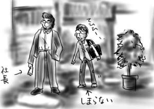
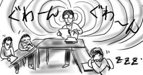
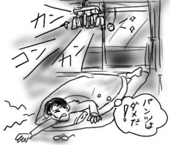
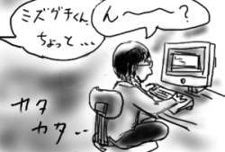
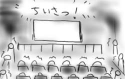
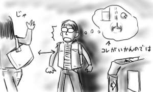
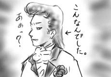

今日は同期飲み会が催されるので新宿まで出かけました。今日集合するのは新入社員研修時に心の暗黒面を響き合わせた数少ない同期達であり、配属によってあちらこちらに散らばった後もこうしてたまに集合してお互いの暗黒面を確認しているのです。数少ない貴重な心の交流と言えましょう。130人はいる同期のうち、響き合った暗黒同期は6人ですが、世間的に割合が大きいのか小さいのかはよく分かりません。
集合は16:30からだったので、昼過ぎに大宮に出て、モスでタンドリーチキンバーガーを喰らい、「斑鳩」をプレイ。いつものことなのでもう誰もツッコミませんよね。ある程度はっちゃけたので1面で67チェーン、2面で73チェーンなど自己新をマーク。やはり3面が鬼門で、タイトル前が安定しないばかりかチェーンを考えると死亡と言うこともあり得ます。新宿のモアなど猛者(モアだけに)が集うゲーセンとは異なり、ここでは「斑鳩」は誰もプレイしていないので自己流で解決策を編み出すしかありません。ひとりぼっちの宇宙戦争(藤子・F・不二雄)という感じでかなり盛り上がります。昔から一人遊びの得意な子でしたが、それも限度があるだろ、と心のもう一人がツッコミます。
気が付くと4時前だったので急いで快速に飛び乗りました。新宿に着いたのは集合時間3分前。本気で危なかった。
いつもはあまり入らないような落ち着いた上品な感じのお店が会場でしたが、見た目が部長クラスの貫禄を持つ同期(注:もちろん同い年。コードネームは社長)が引率だったので問題ありません。僕なんかスーツを着た日には未だに就職活動中ですっ！という感じに見えるのにこの差は一体なんだろう。

女児誕生を控えた同期に名前を考えてあげた(押し付けがましく)結果、「りぜる」「ちよ」「大阪」「くるみ」などの暗黒面溢れるラインナップが出そろい、今回もいい感じです。尤も、今後の身の振り方、それぞれの部署の現状、全社的な視点に立った情報交換など、真面目方面の話題もバッチリ交わしましたし、このような真面目と暗黒のバランスが心地よいので、この会合は止められないなと思います。
会合では「君は夜更かしし過ぎ。学生気分がまだ抜けてないんですよ。」ということを言われましたが、ぼ、僕は一生一学徒のつもりですからっ！！あ、だから未だにスーツを着ると就職活動中ぽいのか(解決)。
会社で広い会場を使って大勢が集まり、とある説明会が催されたのですが、あまり関係のない話が主だったのでいつしか眠りの世界へ。気が付くと隣の上司にもたれかからんという勢いでぐうぐうと寝ていました。おまけにそれを同じグループの大方の人に見られており、後でみんなにそれを指摘され、大変気まずい思いをしました。もう来週から恥ずかしくて会社に行けないわ！でも、隣の上司も寝てましたよ？(そういう問題じゃない)
その説明会が終わった後くらいから偏頭痛が始まり、結局今日はほとんど仕事という仕事が出来なかったんですが、グループの人に「頭痛くて…」ともらしても「○○さんに寄り掛かって寝てるからだよ！」という生暖かい返事が返って来ます。
結局、歩いたり動いたりするだけで頭がガンガンと痛むので、同期の送別会もキャンセルし、早めに退勤して家に帰って寝てました。ズッキリーニ(今適当に思い付いた頭痛薬の名前。小林製薬に期待)。
日付けが変わる頃に目が覚めると頭もスッキリ。単なる寝不足だったのでは…？
金原さん(ページ休止中)がサポートセンター仲間とバンドを組むというので、バンド名を考えてあげました(勝手に)。
「リチャード=クレイマー団」
近年稀に見るくらいに僕の頭脳が冴え渡った会心の出来だと思うのですが、残念ながら不採用でした。どこが悪かったんだろう。
今日は一日中仕様書のレビューだったのですが、僕担当分はほとんどお咎めなしでした。成功のコツは、午後一番のレビューという時の利を利用し、抑揚のない声で淡々としゃべり続けることだと思いました。レビューになってねぇ！というツッコミは無視という方向で。

昨日の日記を更新したところ、西原さんからMSN Messengerで「ガムテープか何かで重りを固定して下さいよ！」みたいなメッセージが入りました。
Σ(゜Д゜;)
まったく気付いていなかったので、「そそそ、そんな方法が！」と返しましたところ、「ミズグチはハイテク以外には興味がないなぁ！」と言われました。それはそれで褒められている気がするのですが、いかがでしょうか。
しかし、本当に興味がないことに関しては全く知らない、知るそぶりも見せないというのは問題があるかもしれません。こんなことだから、MS Wordを使って書類を書く仕事をはじめた途端、処理速度がみるみると通常の1/3くらいに落ちてしまうのだ。これが体重がみるみる落ちるのであれば世の人もWord仕事を喜んでやると思うのですが、実際のところは体力と気力がみるみる落ちるだけなのでダメだ。僕の場合、体重がみるみる落ちてしまってもマズイ。しかし、最近はみるみる腹に肉がついてきた気がして、これもマズイ。
興味ないことに全く無関心ということは、
「今日は、なんかみんな帰りが早いですね？」
「サッカー見るんじゃない？」
「サッカーってJ-リーグですか？」
「ワールドカップに向けての国際試合だよ。」
「そんな本番前の肩慣らしみたいな試合見て楽しいのですか？」
「ここで活躍した選手は選抜されたりもするから頑張るんだよ」
Σ(゜Д゜;)
「な、なるほど！」
みたいな会話をしてしまうことにもなりかねません。気をつけたいですね。
乙一「暗いところで待ち合わせ」(幻冬舎文庫)を買ったのですが、相変わらずあと書きが読ませるので、僕も日記で頑張ってみましたけど、しょぼい結果になりました。
そうそう、「ごくせん」で仲間由紀恵がジャージ姿で眼鏡をかけてて大層よろしかったです。話はヌルすぎて今時そんな教師物ないよう！という感じで、TRICKの方が65536倍くらいおもしろいんですけど、仲間由紀恵鑑賞としての価値だけはあるので概ねOKです。
今住んでるところはベランダ側のドアに、アルミだかステンレスの雨戸みたいなのがついていて、上から引き降ろして使えるようになっています。上から引き降ろすために雨戸から糸が釣り下がってて重りがぶら下がってるんですけど、これが風でぶらぶらと揺れるのです(前置き)。
昨日は風が強かったですね(いきなり本題)。そんなわけで雨戸の引き糸も強風にあおられ、あっちへフラフラ、こっちへフラフラ、なんて悠長な状態ではなく、全力を持ってガラス戸へ体当たりをかまして来ます。カンカンコンコンと不快な音を立てるのはまぁいいのですが、明け方まで続くとはどういう了見ですか。
僕はこう見えても地震なんかで絶対目が覚めたりするタイプなので、結局ほとんど熟睡できませんでした。引き糸とパンツや靴下なんかを吊ってある洗濯物用クリップハンガーがキーキーと音を立てながら襲い掛かってくる幻影を見たような。うーん、パンツはダメだよう！

そんなわけで今日1日は睡眠不足の弊害で、食べ物を取り落とす、手を洗おうとして蛇口に指をしこたまぶつける、靴を履こうとして蹴っ飛ばしてしまい、それを追い掛けてその場でグルグル回る、など長谷川町子が考え付くだろう、おおよそのうっかりを網羅してしまいました。
で、家に帰って来たら今日も雨戸の引き糸がガラス戸に体当たりをかましていました(endless)。明日はどんなうっかりをしでかすのか、今から心配です。
Javaのコーディングで何が厄介かというとGUIのレイアウトに尽きるので、こういうのは実装開始前に仕様書作成と合わせて見た目だけ先に作っておくのが精神衛生上よろしいかと思います。いざ実装開始したら機能だけ作り込めるし。ということで、さっさと機能仕様書を書いて上司に渡し、ムリムリと必要なウィンドウを生成していたのですが、あまりに微妙すぎる作業のため、かなりブツブツ言いながら没頭する羽目になり、上司が仕様書について質問しようと僕に声をかけた時に、思わず「んーーー？」というかなりフレンドリィな返事を返してしまいました。あわわー！
さすがにハッと気付いて、「んーはははは、ハイっ？？」と繋いでおきましたけど、それについてノーコメントだったので、怒りゲージ+2くらい行ってるのではないかと気が気ではありません。

さらに、「まだ岩槻(のサーバー)死んでるかな？」という発言に対し、ガバッっとモニタから顔を上げ、「また犬が死にましたか！」と訳の分からない反応を返しました。今日の僕は迂闊すぎです。春の陽気で脳がゆるんでいるとしか思えません。
ちなみに、さすがに居眠りはしてませんよ？
NiCOLさんに教えてもらったemilyがかなり気になります。グッズとか欲しい！
昼過ぎに起きだして洗濯を済ませた後、自転車でモスバーガーまで出かけ「タンドリーチキンバーガー」をテイクアウト。何回食ってもうまいなぁとムシャムシャ食う。期間限定と明記されているものの、一体いつまでの限定品かについては明記されていないので、あと何回食えるのか、かなり不安です(中毒)。
そして夕飯の買い出しに行こうとした時点でなんだか眠気がMAXになり、布団に倒れ込んで2時間ほど睡眠。目が覚めたのが19:30くらいだったので、逆にサティで半額品をあさることが出来ました。怪我の功名とはこのことだね(?)。
そして夕飯を食い終わった時点でなんだか眠気がMAXになり、布団に倒れ込んで4時間ほど睡眠。目が覚めると日が変わってました。これが噂の眠り病ですか！
そんなわけで、僕の日曜日はあっという間にふっ飛んでしまいました。せめて楽しい夢でも見ていたらまた違うんだけどなぁ…。とか、こういうことを書くから、友人や先輩に「しかし、しょっぺぇ日記だな」とか「なんだか読んでたら寂しくなってくるよ。ダメだよ、もっと明るく生きなきゃ…」とか言われるのだなぁ(直す気ないのかよ)。
休日ということで、西原さんとまさしろと映画を見に行くことになり、新宿まで出かけました。最初は「Lord of the Rings」を見る予定でしたが、立ち見を回避するには40分前には並べと言われたこと、次の上映開始までそんなに時間がないこと、その次の上映は最終上映になってしまい、一回が長過ぎるので見終わった時には22時を余裕で回ってしまう、などもろもろの悪条件が重なってしまったのであきらめることに。新宿は映画見るところじゃないな！など捨て台詞を吐きながら(西原さんが)、チケット売り場を後にしました。控えめに言って人多すぎだとは思いますけど。
で、結局「WXIII -Patlabor3 the movie-」を選択。新宿ピカデリー4というところでやってたのですが、やっぱり満員ですぐの上映には入れず、整理券をもらって最終上映を見ることに。しかし最終上映開始が指輪物語より遅いのに、終わるのが指輪物語より1時間以上早いので問題ありません。整理券があるので、酒飲んでから見に戻ってこればいいしね(最悪)！
ムシャムシャゴクゴクとカクテルやフライドチキンなんかをパクついた後、劇場へ移動。上映開始直前になって哲がやって来たのですが、貴様は整理券のない列に並んで立ち見で見やがれ！と冷たくあしらいながら(ひどい)、入場。入り口でハッキリ言って不要な入場記念品(主人公・秦が歩いているセル画、ミニパト切り抜き紙人形)をくれるので全部哲に押し付けました(ひどい)。入場待ちの列はさすがアニメ映画と言う感じのスッパイ列でした(まさしろと観察←迷惑)。
劇場はピカデリーとは名ばかりの下手なミニシアターよりも小さい箱で、幕が上がってホームシアター用ワイドテレビ？という感じの小さな小さなスクリーンが顕われた時は、会場から「ちいさっ！」というドヨメキが起こっていました。

映画ですが、い、一片の救いもねぇ！という感じで歴代映画の中でもダントツの暗さ。事前にいろいろ情報を仕入れずに見た方が楽しめるかと思います。とり・みきの脚本は、説明の過不足もなく、必要以上にしめっぽくなることもなく、かなり好感を持ちました。登場人物もそれぞれがそれぞれの立場でプロの仕事をしていますし、中盤で一度大きな見せ場を作るなど脚本のお手本のような手堅い作り。その優等生ぶりが鼻につく人もいるのではないかと思いますが、僕はこういう、手堅く、こじんまりとまとまった映画は好きなので問題ないです。
閑話休題ですが、このWXIIIのようなお話は、現在のヤング小説のジャンルでは、「今から考えるとあの時、あれを選択したことによって事件の歯車が回り始めてしまったのだが、その時は何も分からなかった。まるで世界がそれを望んでいたかのように、僕は何も考えずにそれを選択してしまったのだ」みたいな回顧のモノローグなんかが冒頭に挿入されるのではないかな、と思いました。しかし、WXIIIでは、主人公はそのようなしめっぽい回顧なんかはせず、歯車が回ってしまったことによる変化を日常の一部として抱えながら生きていくラストシーンが描かれ、僕はそれだけで高得点をつけざるを得ないのです。
しかし、27にもなってパトレイバーの映画を見に行くことになるなんてまったく予想外です。劇場1作目って15年くらい前かよ！
大宮で同期の結婚祝い飲み会が開催されるというので、定時で会社を抜け出しました。定時に抜け出せば飲み会開始まで斑鳩が出来そうだったので(ダメすぎ)。ようし、やってやるぞと勇ましくイメージトレーニングまで開始して会社の正門まで歩いて来たところで幹事同期女子とばったり遭遇してしまいました。
大宮まで向かう道中に幹事同期女子は「今からプレゼントを買いに行って、花も用意しなきゃね。間に合うかな。」みたいなことを言っていたので、「ああ、これで斑鳩は出来ないな…」と僕も腹をくくったのです。
ところが大宮に着いた途端、幹事同期女子は「じゃぁ会場でね！」とあっさりと僕の目の前から姿を消しました。む、無茶苦茶距離置かれてる！！
自分のモテなさを再認識して普通に凹んだので、斑鳩は4面で死にました(結局やってるのかよ)。

結婚祝い飲み会では、店員から渡されたカジキマグロのステーキの皿を「はい、食物連鎖で松方弘樹の下にいるやつ」と言いながらテーブルに並べたり、ついこの前とある同期が風邪で入院していた病院と、結婚した同期の奥さんが生まれた病院が同じであることが判明した時に「生まれてくる命もあれば、失って行く命もあるんだよ」などと言って嫌がられたりしてました。始末に終えません。
結婚式の写真も見せてもらったのですが、会場はどう見ても普通の日本家屋。聞けば結婚式会場は民家を改造したフレンチレストランだったらしいです。この結婚式の写真の裏では、TV見ながら煎餅食ってたり、店ではフランス料理を出してるのに食卓には和風の煮物などが並べられて子供大文句、など普通に生活している家族が存在しているのだなぁ、という妄想が始まって楽しくなったのですが、伝わらなさそうなのでそれは口に出しませんでした。
BBSに反応があったので、うどん国話の続きです。反応したのは同郷の友人ですが(ヘボ)。
しばらく前に「アド街っく天国」というテレビ東京系列のかなりユル目の番組でうどん国首都である高松が紹介されたことがありました。なんでも、うどん国は結婚年齢が低いことで有名なのだそうです。尤も、学力も低いのですが。そんなわけで、TV画面に写し出された新郎は、長ラン系白スーツにウルフカット＋リーゼントの丸出しスタイル。さらに、結婚の決め手は？というインタビューに対し、「できちゃった！」と答える19歳の新婦という目眩を引き起こすような画面が展開されていました。どこかの大学の先生が「暖かく穏やかな気候が結婚を早めて云々」ということを喋ってましたけど、絶対違うと思います。

また、かなり前の正月番組で、各地方局のアナウンサーがご当地の住民に「あなたはこの地域に何を望みますか？」と聞いて回るという番組をやっていたのですが、うどん国では以下のようなやりとりがなされました。
「ええ大学を作って欲しいですな」
「大学？」
「今、頭のええ奴はみんな他のところの大学行ってそのまま他で就職するやろ？ほんだら(そしたら)頭の悪い奴が残るやろ？ほんで、残ったアホとアホがくっつくやろ？いよいよ、アホが出来るんじゃ！(ますますアホが出来上がるのだ)」
正月早々、大変心が温まったのを覚えています。このように「肉を切らせて骨を絶たれる」ような自虐ネタこそがうどん国人の持ち味です(多分)。このインタビューを受けてたオヤジの方になら、なってもよい。うどん国には、たまにこういうキレ者のオヤジがいるからあなどれないのですが、僕は素直に脱出を選びました。